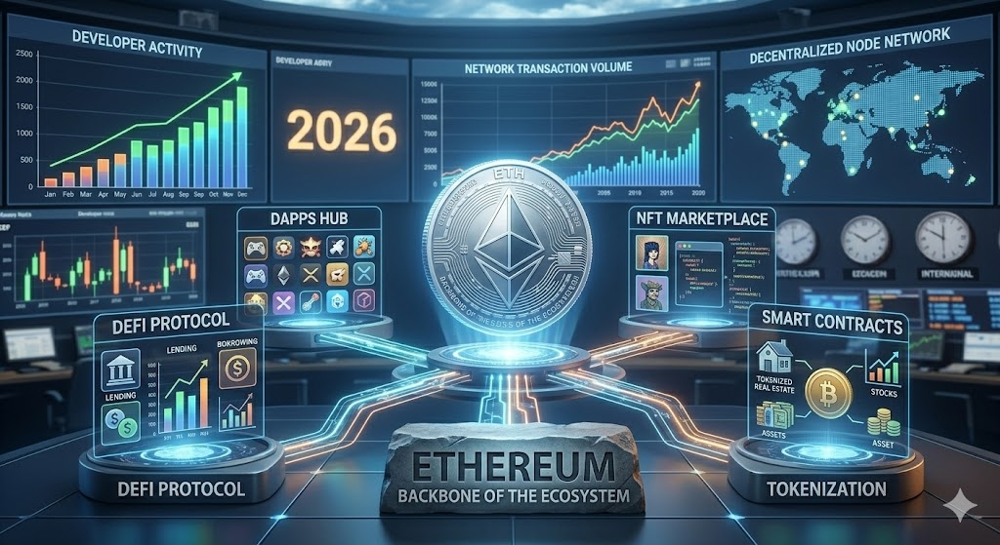
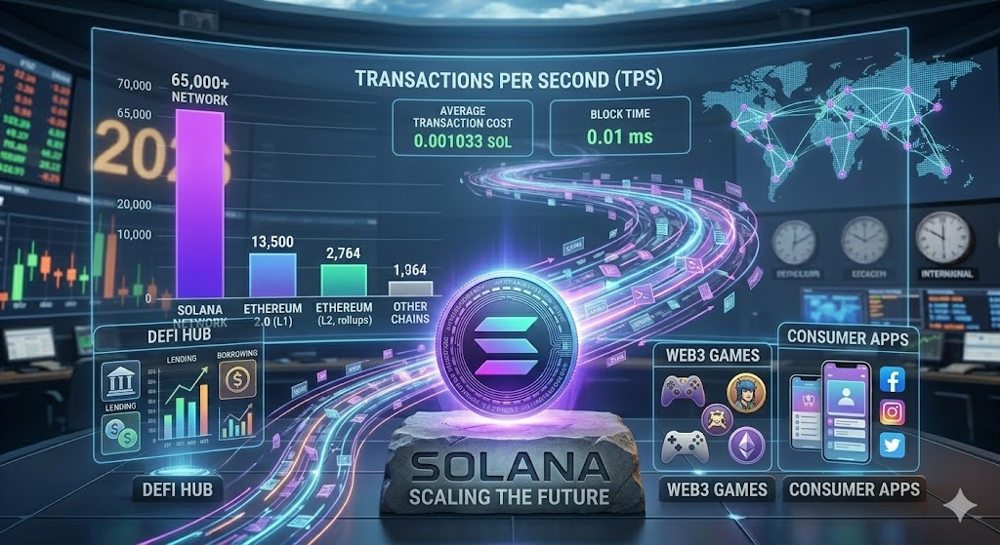
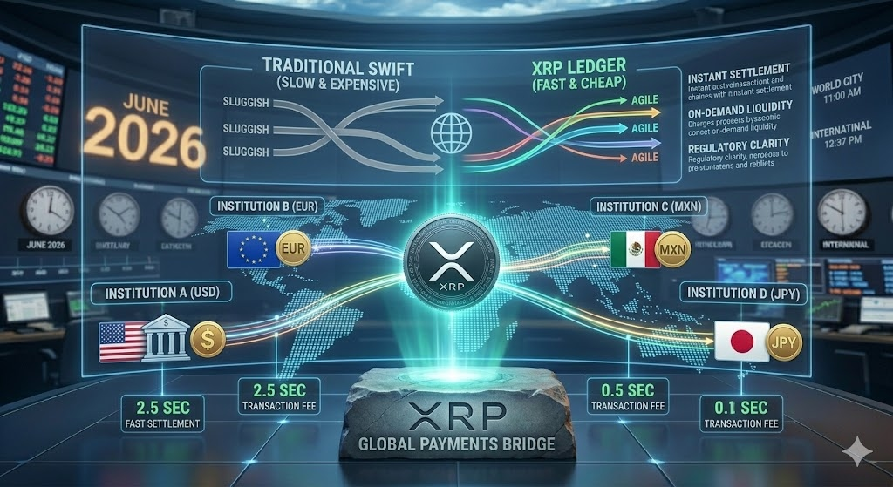
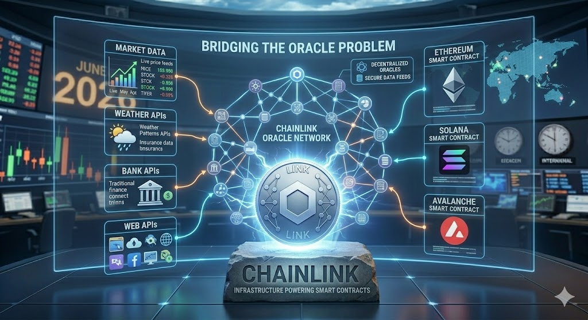

Introduction
As we move through 2026, digital assets continue to play an increasingly important role in global financial markets. The approval of regulated cryptocurrency investment products, the growth of blockchain-based financial services, and the increasing adoption of tokenized assets have helped establish cryptocurrencies as a legitimate asset class rather than a speculative trend.
However, the market has also become significantly more competitive. Thousands of blockchain projects are competing for users, developers, and investment capital. At the same time, regulators around the world are introducing new frameworks that could shape the future of the industry for years to come.
For investors, this means that choosing the right cryptocurrency has become more important than ever. The days when almost any digital asset could generate extraordinary returns are largely behind us. Today, long-term success is increasingly tied to real-world utility, technological innovation, network adoption, and sustainable ecosystem growth.
In this guide, we examine five of the most influential cryptocurrencies heading into 2026: Bitcoin, Ethereum, Solana, XRP, and Chainlink. Each project serves a different purpose within the blockchain ecosystem and offers a unique balance of opportunities and risks.
Rank #1
Bitcoin (BTC)
The Foundation of the Cryptocurrency Market
More than seventeen years after its creation, Bitcoin remains the most important cryptocurrency in the world. Despite the emergence of thousands of competing digital assets, Bitcoin continues to dominate the market in terms of recognition, adoption, security, and overall value.
Why Bitcoin Remains Relevant in 2026
One of Bitcoin's greatest strengths is its simplicity. Unlike many modern blockchain projects that focus on complex ecosystems and decentralized applications, Bitcoin has remained largely focused on a single objective: serving as a decentralized store of value and a censorship-resistant form of money.
Over the years, Bitcoin has increasingly been compared to gold because of its limited supply. The protocol guarantees that no more than 21 million bitcoins will ever exist, making it one of the few truly scarce digital assets in the world.
Institutional Adoption Continues to Grow
Perhaps the most significant development for Bitcoin in recent years has been the rapid increase in institutional participation. Major asset managers, hedge funds, pension funds, publicly traded companies, and wealth management firms have all entered the market. The approval and expansion of spot Bitcoin ETFs have made access significantly easier for traditional investors.
Outlook for 2026: Bitcoin appears well positioned to remain the dominant cryptocurrency. Its limited supply, growing institutional adoption, global brand recognition, and unmatched network security continue to make it one of the strongest digital assets available to investors.
Rank #2
Ethereum (ETH)
The Backbone of the Blockchain Economy

While Bitcoin introduced the concept of decentralized digital money, Ethereum expanded the possibilities of blockchain technology far beyond simple payments. Since its launch in 2015, Ethereum has become the foundation for much of the modern cryptocurrency ecosystem.
What Makes Ethereum Different?
Unlike Bitcoin, which was primarily designed to function as a decentralized currency, Ethereum was created as a programmable blockchain. Its smart contract functionality allows developers to build applications that operate without centralized control. These applications can automate financial transactions, manage digital assets, and facilitate lending and borrowing.
The Largest Developer Ecosystem in Crypto
One of Ethereum's greatest strengths is its network effect. The blockchain has attracted more developers than any other cryptocurrency project. Many of the most influential projects in decentralized finance (DeFi), including lending protocols, decentralized exchanges, and stablecoin platforms, were originally developed on Ethereum.
Outlook for 2026: Ethereum remains one of the strongest long-term investments. Its massive developer community, leadership in decentralized finance, staking ecosystem, and growing role in tokenization give it a unique position.
Rank #3
Solana (SOL)
The Fast-Growing Challenger to Ethereum

Over the past few years, Solana has emerged as one of the most significant competitors to Ethereum and one of the fastest-growing blockchain ecosystems in the industry. Launched in 2020, Solana was designed with a clear objective: to create a blockchain capable of supporting large-scale applications without sacrificing speed or affordability.
Why Solana Has Gained So Much Attention
One of Solana's biggest advantages is its performance. The network can process thousands of transactions per second while maintaining extremely low transaction costs. This makes it attractive for applications that require high throughput, including decentralized exchanges, payment systems, gaming platforms, and consumer applications.
Strong Developer Momentum
Over the past few years, Solana has consistently ranked among the leading blockchain ecosystems in terms of developer activity. As more developers build applications on the network, the value of the ecosystem can increase through a powerful network effect.
Outlook for 2026: For investors willing to accept slightly higher risk in exchange for potentially higher growth, Solana represents one of the most attractive opportunities in the market.
Rank #4
XRP
A Leading Cryptocurrency for Global Payments

While many blockchain projects focus on decentralized finance, smart contracts, or digital collectibles, XRP was built with a much more specific objective: improving international payments.
The Problem XRP Aims to Solve
Traditional international payment systems are often slow, expensive, and dependent on multiple intermediaries. XRP was designed to address these inefficiencies. Using the XRP Ledger, transactions can be completed in just a few seconds, with costs that are significantly lower than those associated with traditional banking networks.
Speed, Efficiency, and Scalability
Transactions on the XRP Ledger settle in seconds, making the network one of the fastest among major cryptocurrencies. Fees are also extremely low. Unlike proof-of-work systems that require large amounts of computing power, XRP uses a consensus mechanism that is highly energy efficient.
Outlook for 2026: As blockchain technology becomes increasingly integrated into the global financial system, XRP remains one of the strongest candidates for payment-related applications.
Rank #5
Chainlink (LINK)
The Infrastructure Powering Smart Contracts

When investors discuss the cryptocurrency market, most of the attention tends to focus on well-known assets. However, some of the most important blockchain projects operate behind the scenes. Chainlink focuses on solving one of the most critical challenges in blockchain technology: connecting blockchains to real-world data.
Why Smart Contracts Need External Data
By default, smart contracts cannot access information that exists outside their own blockchain. Without a trusted source of external information, applications cannot operate safely. Chainlink provides decentralized oracle networks that deliver real-world data to blockchain applications.
The Growing Importance of Tokenization
One of the most important long-term trends in finance is the tokenization of real-world assets. For tokenization to work effectively, blockchain systems must be able to access reliable external information. Chainlink is positioning itself as a key provider of this infrastructure.
Outlook for 2026: Chainlink appears well positioned to benefit from the growth of decentralized finance and tokenized real-world assets. It provides a service that addresses a genuine technological need.
Comparison Table
| Cryptocurrency | Primary Use Case | Risk Level | Growth Potential | Key Strengths |
|---|---|---|---|---|
| Bitcoin (BTC) | Store of Value | Low-Medium | High | Scarcity, institutional adoption, security |
| Ethereum (ETH) | Smart Contracts & DeFi | Medium | Very High | Largest ecosystem, staking, developers |
| Solana (SOL) | High-Speed Applications | Medium-High | Very High | Scalability, low fees, growing adoption |
| XRP | Global Payments | Medium | High | Fast transactions, low costs, payment tech |
| Chainlink (LINK) | Blockchain Infrastructure | Medium | High | Oracle services, tokenization adoption |
Final Thoughts & FAQ
The cryptocurrency market in 2026 is significantly more mature than it was just a few years ago. Institutional adoption continues to increase, blockchain technology is finding new real-world applications, and digital assets are becoming more integrated into the global financial system.
Frequently Asked Questions:
- Is Bitcoin still worth buying in 2026? Many investors believe it remains one of the strongest long-term digital assets due to its limited supply and institutional adoption.
- Can Ethereum outperform Bitcoin? They serve different purposes. Depending on market conditions and adoption trends, either asset could outperform the other.
- What is the fastest-growing cryptocurrency in 2026? Solana has been one of the fastest-growing ecosystems recently, driven by strong developer activity.
Disclaimer: This article is for informational and educational purposes only. It does not constitute financial, investment, or trading advice. Cryptocurrencies are highly volatile and risky financial instruments.